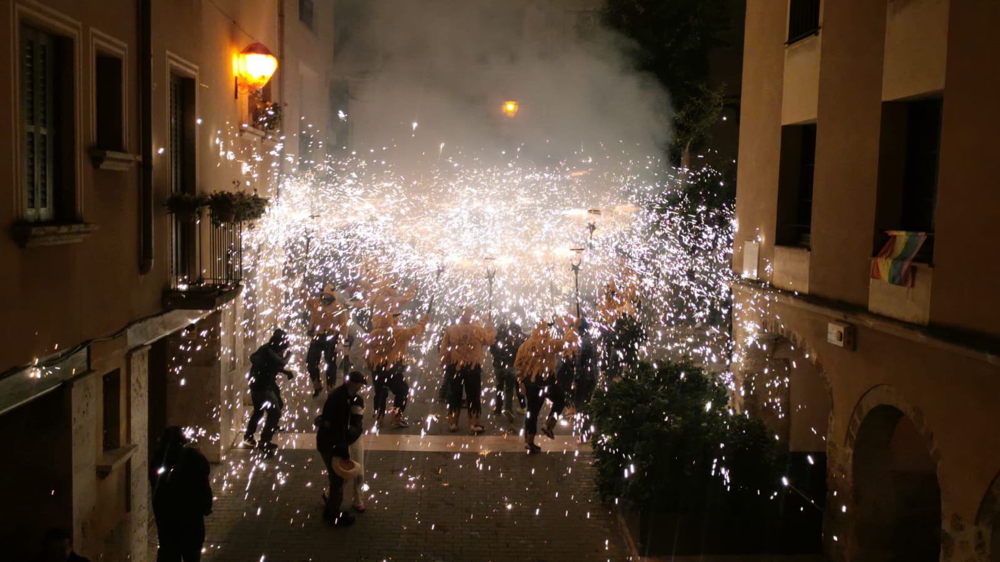
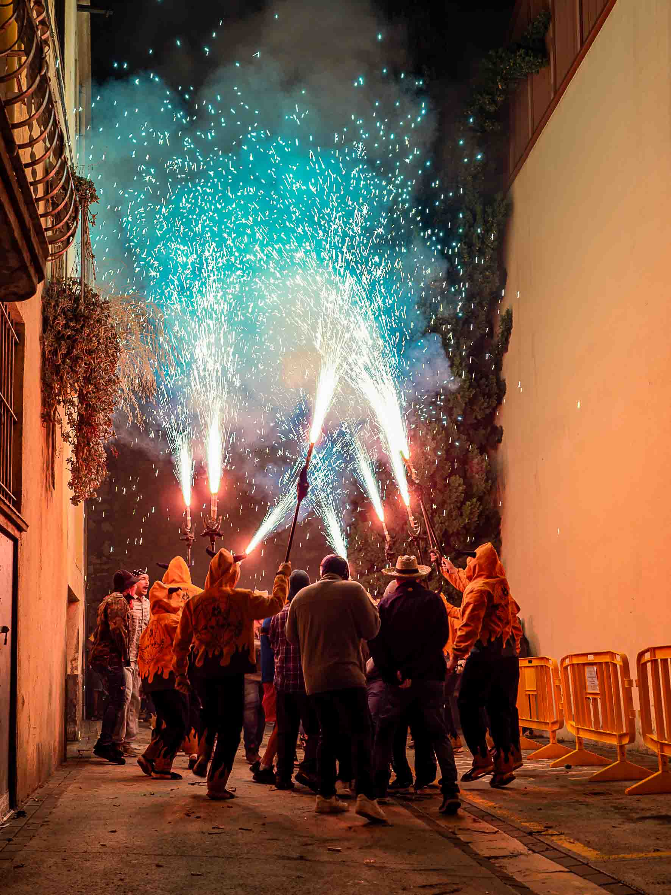

L'ASSOCIACIÓ
Coneix Les Cabres de Sant Procopi
Qui som?
Les Cabres de Sant Procopi és una associació de la Pobla de Claramunt vinculada al món dels focs artificials, la festa i la tradició.
En aquest espai podrem explicar la història de l'associació, la seva activitat i tot allò que la fa especial.


La nostra història
Aquí escriurem la història de Les Cabres de Sant Procopi, els seus inicis, com va néixer l'associació i els moments més importants que hem viscut al llarg dels anys.
Foc i tradició
Una part important de la nostra identitat són els focs artificials i les activitats relacionades amb la cultura popular i la festa.
Activitats
Descobreix les activitats de l'associació.
📅Calendari
Consulta les properes dates.